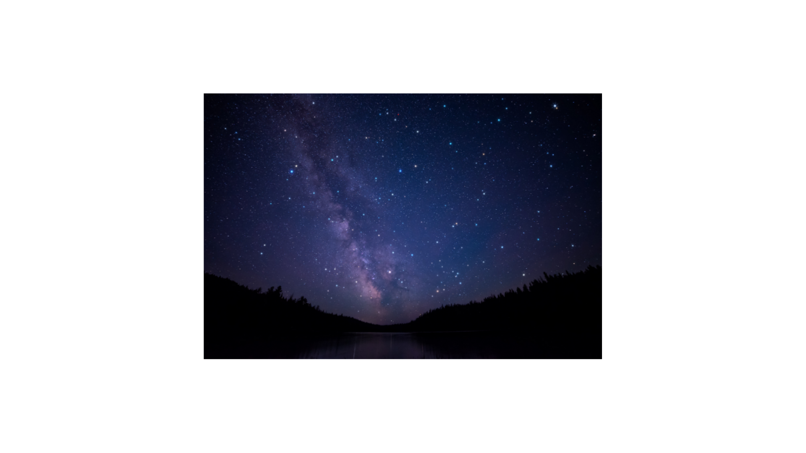

This website is perfect for beginners who are interested in the hobby of stargazing. Stargazing is as simple as just looking at the night sky! But you can make it more fun by using equipment to look at the details of the night sky. The 'equipment' refers to cameras, tripods, and more. People sometimes are interested in stargazing because of the benefits it provides. Stargazing is a peaceful way to escape from stress in your daily life and just relax. It isn't just about looking at some stars; other things are very spectacular to view, such as planets, meteor showers, and the Milky Way galaxy.
